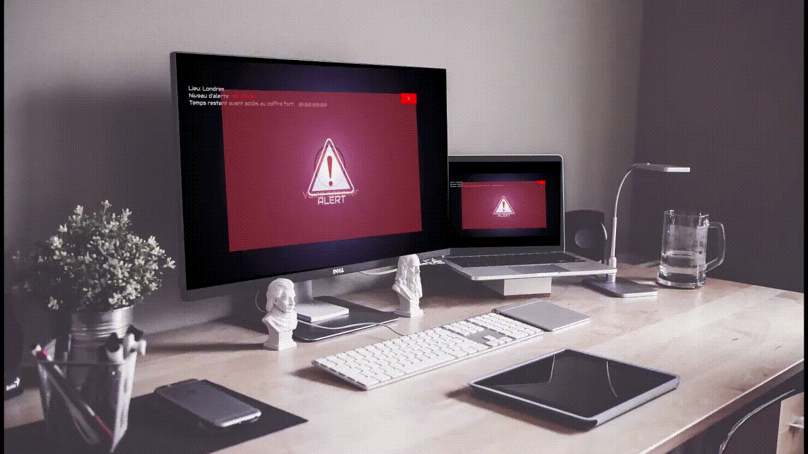

Réalisation d'un HUD
Mettre en commun deux passions
L'idée : Réaliser et expérimenter le fonctionnement d'un HUD (Head Up Display) qui est une méthode par laquelle l'information est relayée graphiquement. Le concept était de réaliser une alerte qui apparaîtrait sur un ordinateur avec une voix robotique ayant un accent espagnol pour contraster avec l'aspect dramatique de la chose
Durée : 2 semaines
Cible : Projet d'école
Diffusion : Interne à l'école / youtube
Techniques : Adobe Illustrator / Adobe After Effects